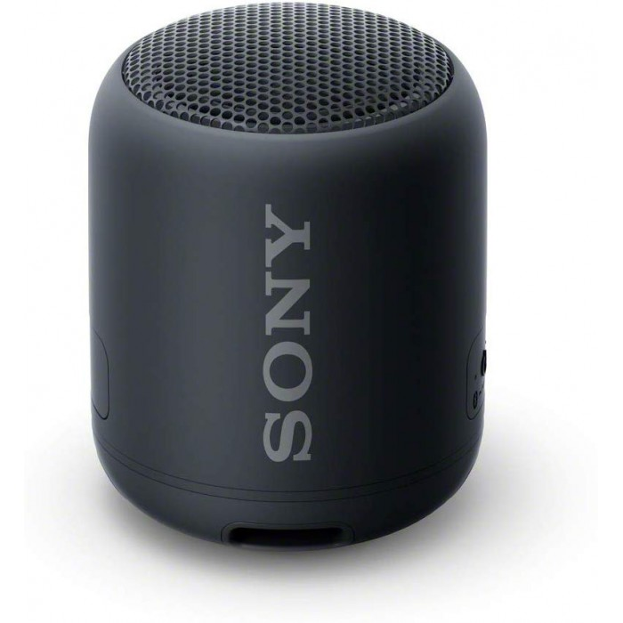
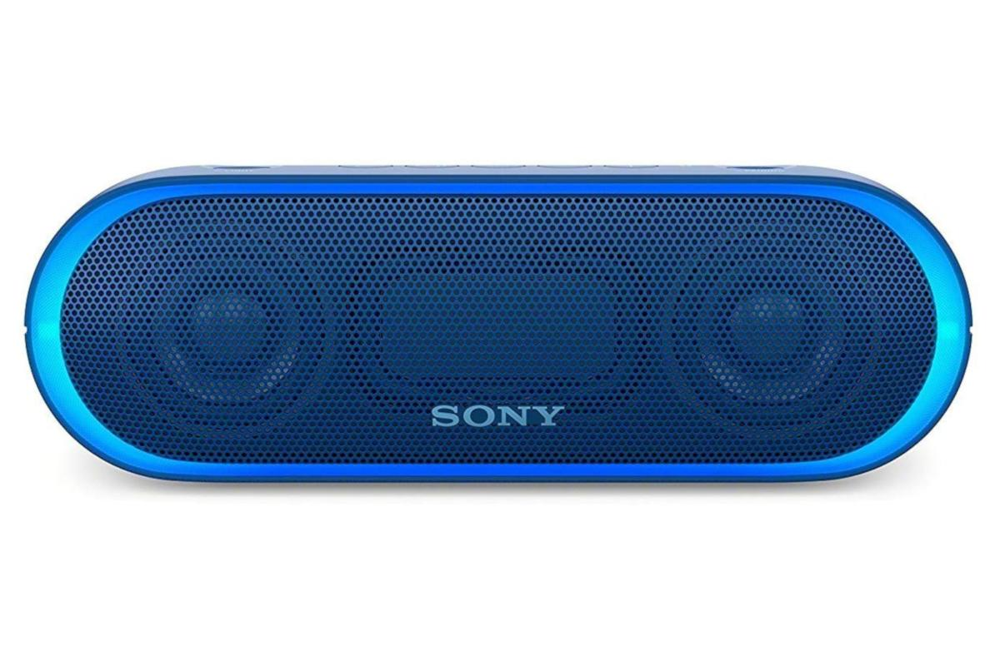
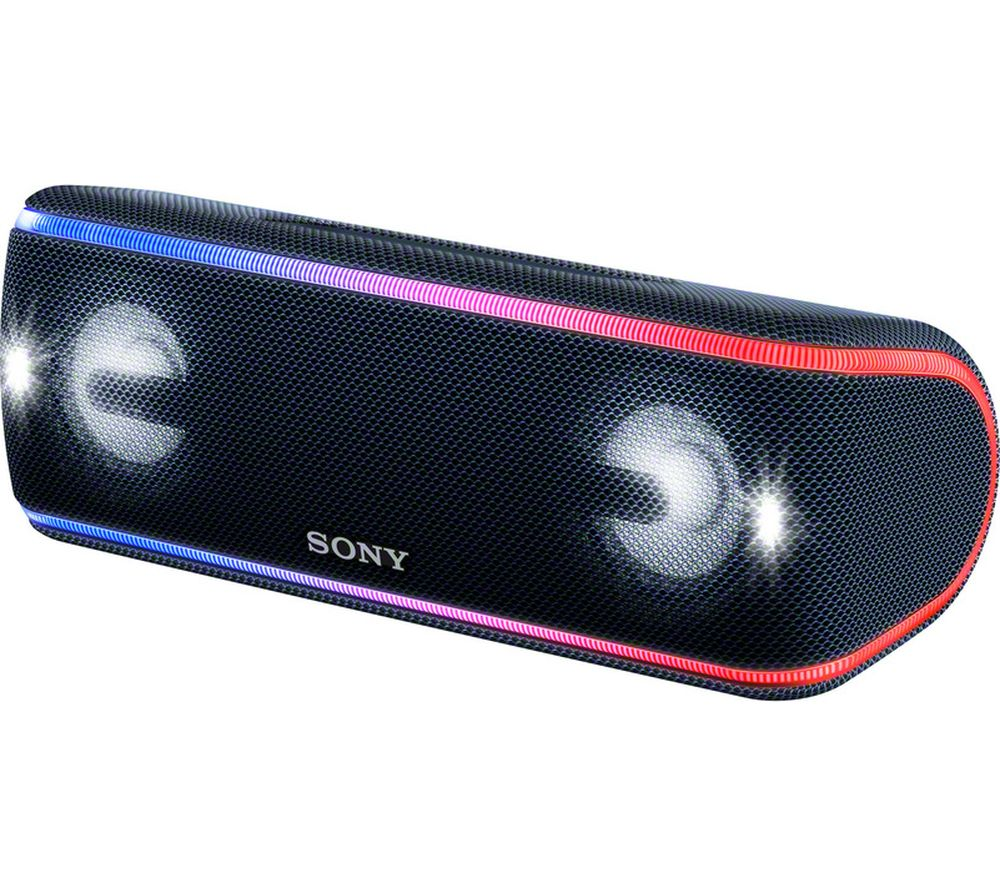

Wireless speakers are one of the most popular forms of portable music today and Sony has taken full advantage of that. Sony has many different models of bluetooth speakers ranging through each price bracket. As the Sony Walkman faded away with growing technological advancements, Sony strived to stay on top of the market by creating some of the best high-end speakers that are available.
  Some of the top end Sony Bluetooth speakers include the SRS-XB402M model which retails at 279 Euro and the SRS-XB32 model which retails at 169 Euro. These models are leading the range when it comes to Bluetooth speakers. The bluetooth speaker market is projected to generate revenues of up to more than 8 billion dollars by 2023 and Sony is one of four companys who dominate the market share along with Bose, HARMAN International(Samsung) and Beats Electronics(Apple). From releasing their first radio back in 1955, Sony have come along to be considered the top brand for wireless speakers.